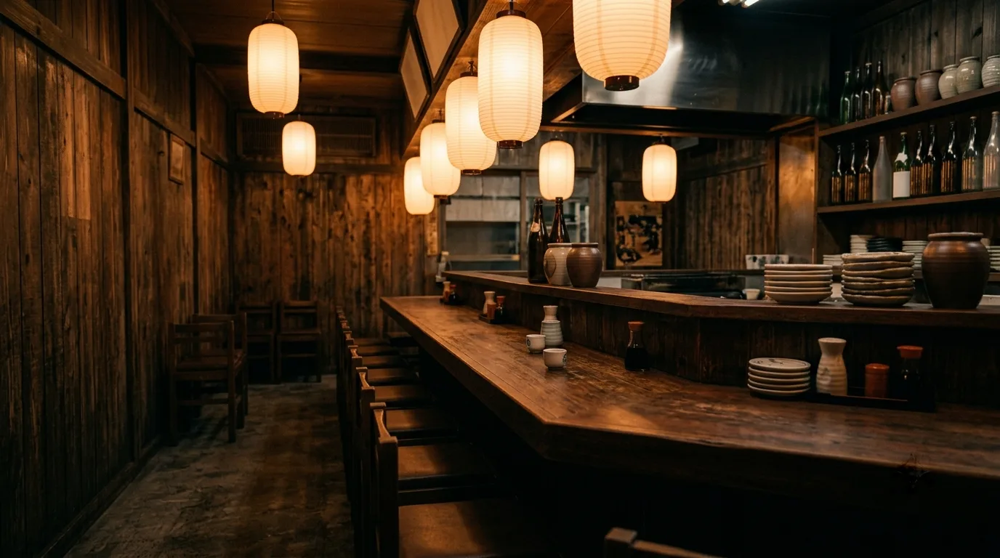
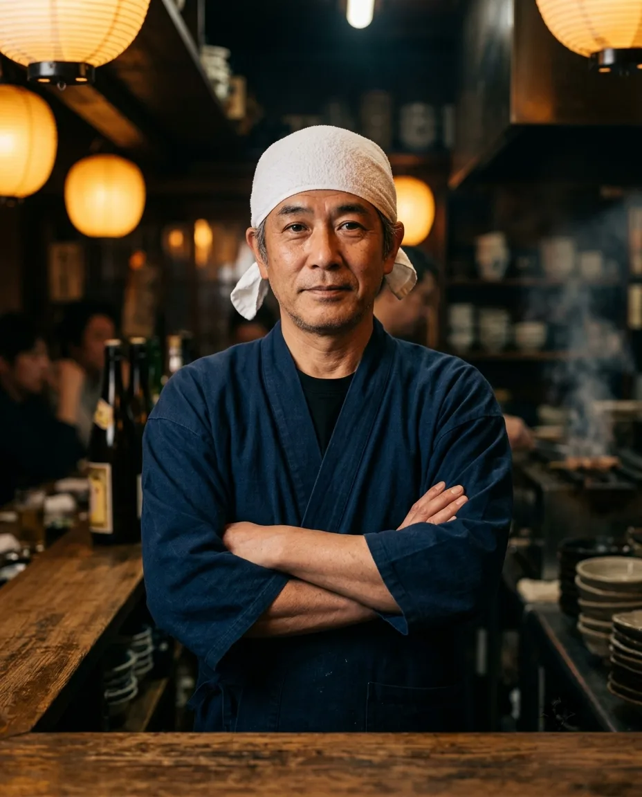
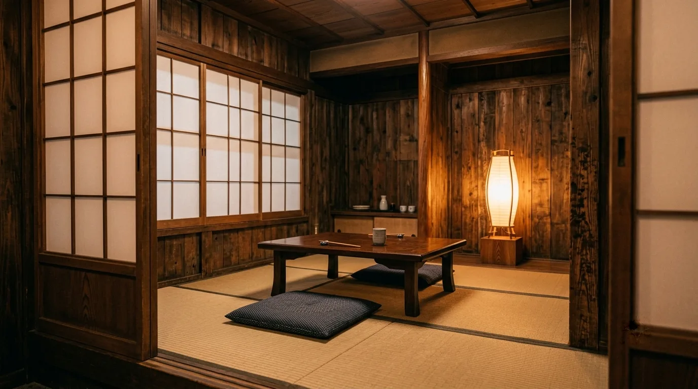
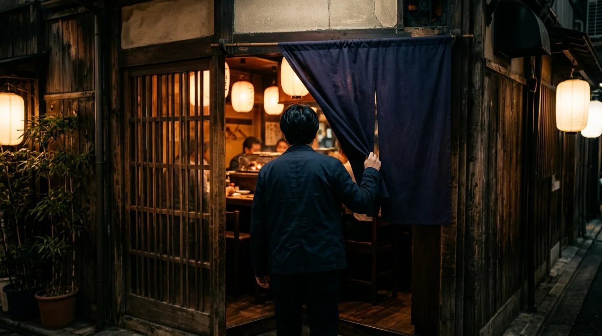

カウンター
焼き場の目の前の席です。炭火の音と香りを感じながら、焼き上がりをそのままお出しします。おひとりでも、ふらりと。

火床 一 ／ 遠火いちばん火から離れた段
火からいちばん離れた段です。席のこと、ご来店の流れ、アクセス、ご予約までまとめました。
カウンターの向こう側

見ているのは、
炭の火加減だけ。
備長炭の火加減だけを見ながら、一本ずつ丁寧に焼き上げています。強すぎず、弱すぎず。串と向き合う時間を大切にしています。
仕込みでは串一本ごとに肉の厚みや脂の乗り方を見極め、火からの距離と時間を細かく調整します。同じ串でも、その日の素材の状態によって焼き加減は変わります。
焼き場の前と、奥の座敷
焼き場の目の前の席です。炭火の音と香りを感じながら、焼き上がりをそのままお出しします。おひとりでも、ふらりと。

奥に畳の席があります。ゆっくり腰を落ち着けたいときに。ご希望の席がある場合は、ご予約の際にお知らせください。
はじめての方へ

赤提灯が目印です。ご予約なしでもお席が空いていればご案内します。
ご注文をいただいてから焼きはじめます。串が炭にのる音を聞きながら少しお待ちください。
焼き上がった順にお出しします。熱いうちにどうぞ。
※ 位置関係のイメージ図です。実在の場所を示すものではありません（サンプルサイトのため）。
フォーム・LINE・メールのいずれからでも
実際のサイトでは、この後にお店へご予約内容が届きます。このページはRESCが制作したサンプルのため、データは送信されていません。
お酒の提供は20歳以上の方に限らせていただきます。20歳未満の方の飲酒、および20歳未満の方へのお酒の提供・販売はいたしません。お車でお越しの方へのお酒の提供もいたしません。